Edoras Quest
Os itens que dropam, são até agora conhecidos são esses,
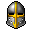
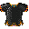
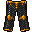
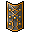
 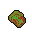
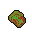
Por favor o loot da quest não está atualizado por que até no site do bronson não está, então por favor se dropar algo diferente ou melhor, me manda o print ou cola em uma cartinha o drop e me manda pelo mail de uns dos meus chars.
Agradecimentos para "Consul Nick Name, Mago Warcraft, Skiter", Tamo junto pessoal.
Para chegar até a edoras quest você precisa está em edoras e seguir esse caminho.

Ná Edora quest existe 5 fases e o boss, todas as fases você precisa dropar uma chava das criaturas para prosseguir, se não cair a chave vai apertando a alavanca até cair.
Ná 1º fase você vai ter "Elite Smuggler" que não tem defesa contra nada e tem ❤400 de vida
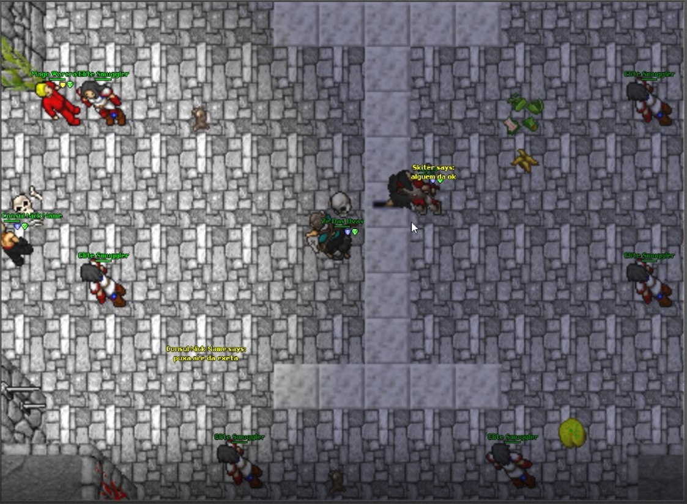Ná 2º fase você vai ter "Elite Amazon" que não tem defesa contra nada e tem ❤330 de vida
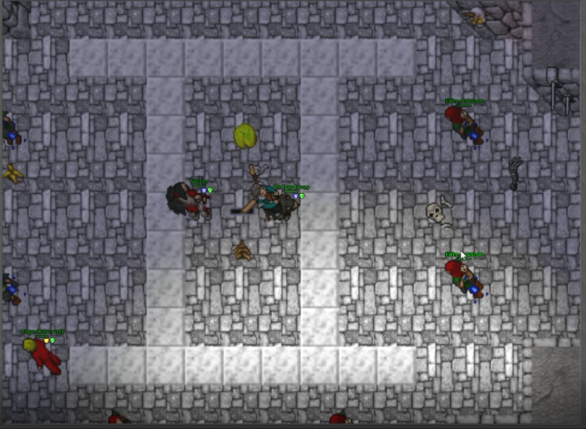Ná 3º fase você vai ter "Elite Bandit" que não tem defesa contra nada e tem ❤815 de vida
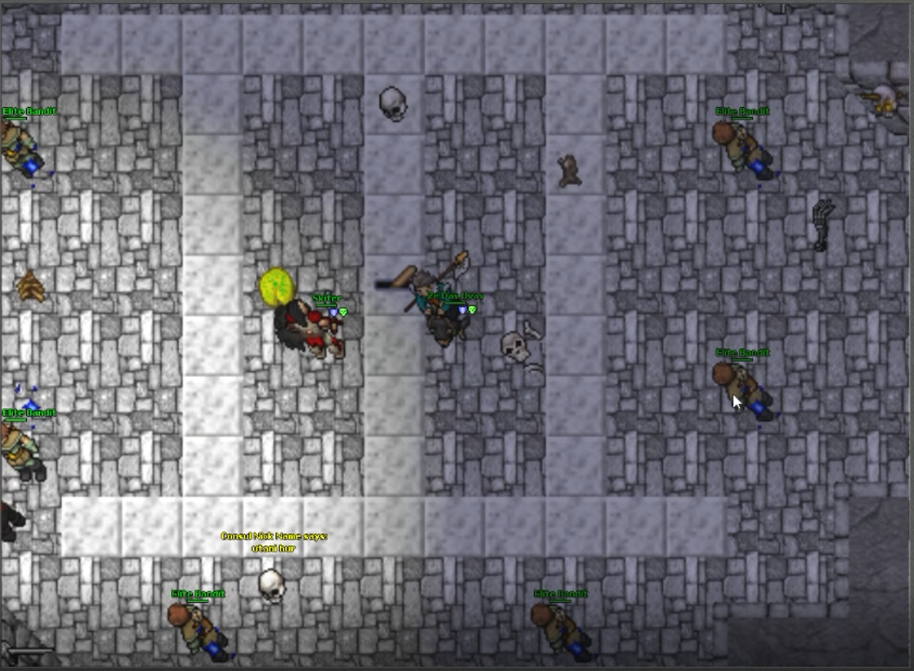Ná 4º fase você vai ter "Elite Valkyrie" que não tem defesa contra nada e tem ❤570 de vida
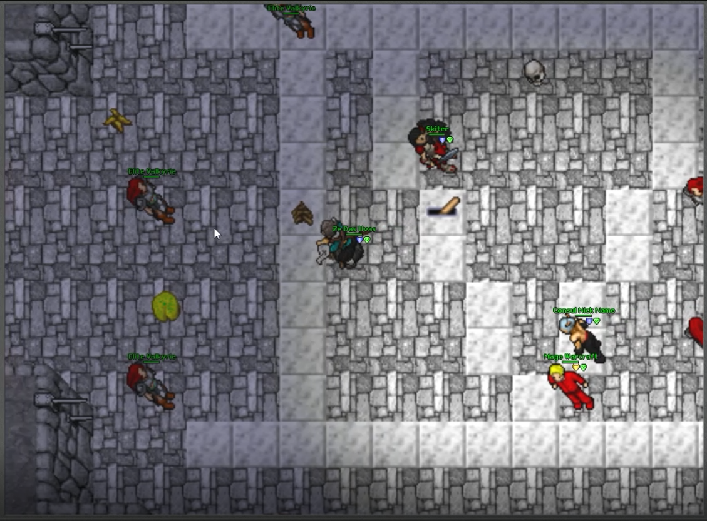Ná 5º fase você vai ter "Elite Assassin" que não tem defesa contra nada e tem ❤525 de vida
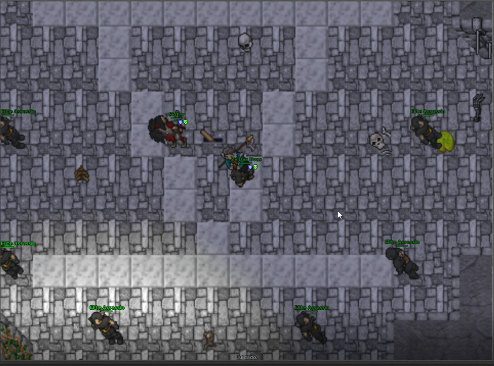No boss você vai ter "Fingerless Butcher"
que tem defesa 🧊15 🌾20 🔥15 💀15 ⚡15 💡15 e ❤10000 de vida
Vídeo da quest, (não liga minha nubada como blocker😁)